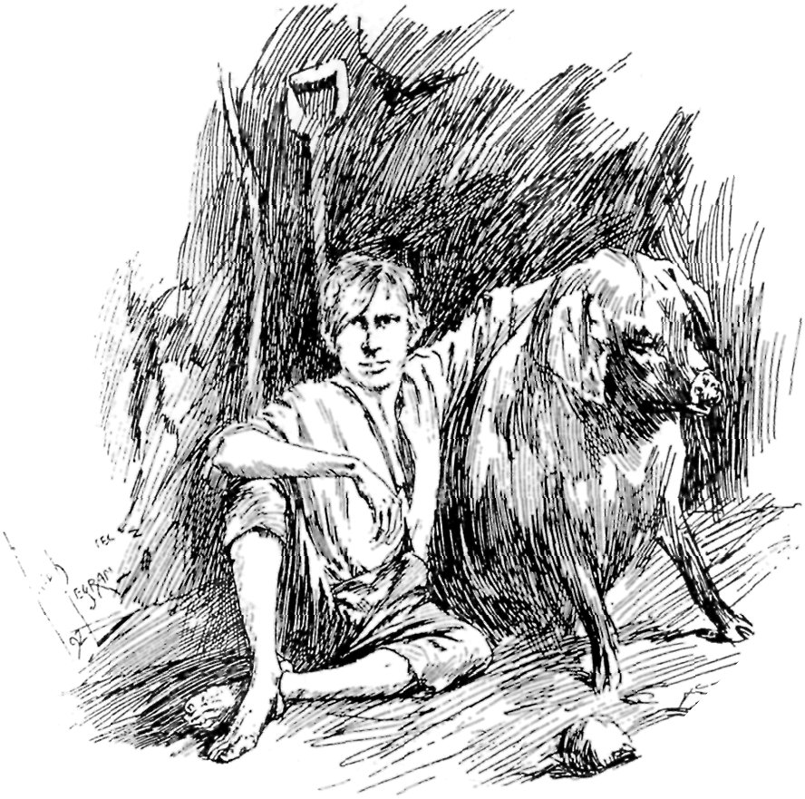
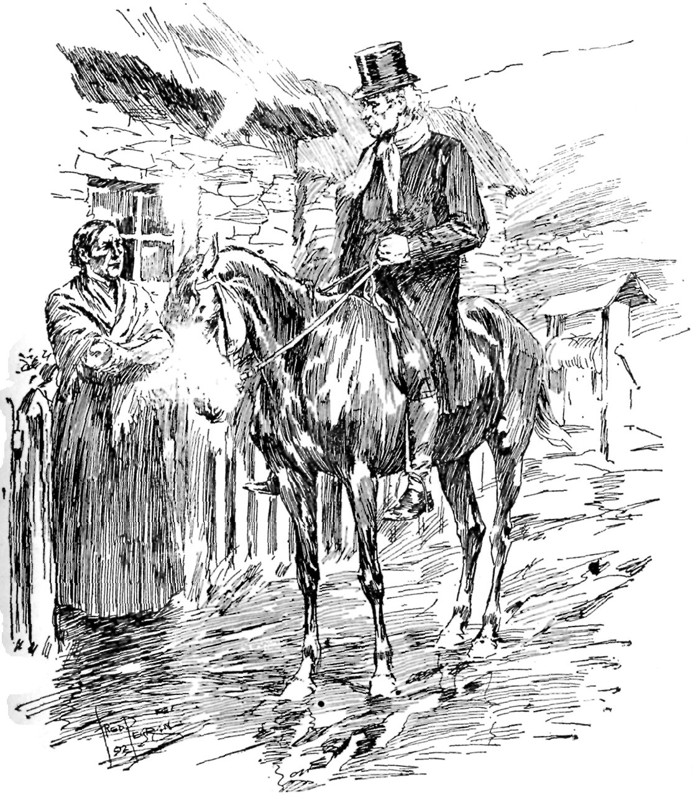
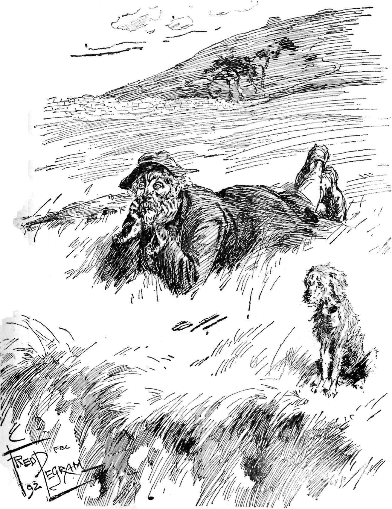
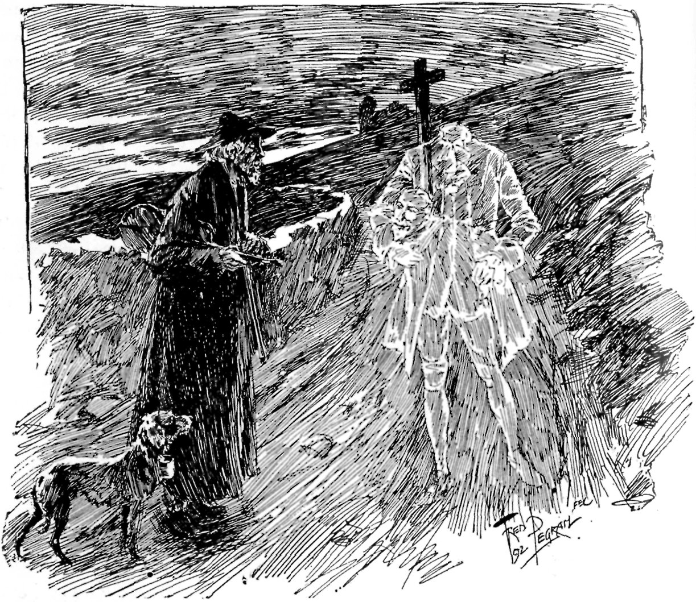

A BLIND BEGGARMAN
BY FRANK MATHEW.
ILLUSTRATIONS BY F. PEGRAM.
| "Left dark among mine enemies." |
Long ago, the Fairies often stole children; they chose the prettiest, and carried them to Fairyland—the Kingdom of Tyrnanoge,—leaving hideous Changelings instead. In those days no man had call to be ashamed of his offspring, since it a baby was deformed or idiotic it was known to be a Changeling.

"THE PIG WAS A FRIENDLY ANIMAL."
{kind=link}
It is sixty years now since old Mike Lonergan, who lived in a hovel in Moher Village, was robbed of his child. It was his wife first found out the theft, for she had seen her unborn son in a dream, and he was beautiful; so when she saw the sickly and ugly baby, she knew that he was not hers, and that the Fairies had stolen the child of her dream. Many advised her to roast the Changeling on the turf-fire, but the White Witch of Moher said it would be safer to leave him alone. So the child Andy grew up as a stranger in his father's hovel and had a dreary time of it, he got little food and no kindness. The Lonergans gave him neither offence nor welcome, hoping that he might see fit to go home to Tyrnanoge and yet bear them no grudge. He grew up an odd wizened little wretch, and everyone shunned him. The children loathed him because they were afraid of him, so they hooted him from a distance, or stoned him from behind walls.
Indeed, at this time his only ally was the pig that lived in one corner of the hovel. The pig was a friendly animal, his front half was a dull white and the other half black, and this gave him a homely look as if he was sitting in his shirt-sleeves. Andy would shrink into the corner, and sit cuddled there with one arm round the pig's neck. Old Mike Lonergan took to drink, and spent every evening at the Shebeen—small blame to him—for how could a man be expected to stay at home with a Changeling sitting in a corner and staring at him?
When the pig was driven to the Fair at Ennistimon, Andy was left friendless, and then—in all winds and weather—was to be found on the Cliffs of Moher. Sometimes he stopped out all night, till hunger would bring him back when the Lonergans were rejoicing at his disappearance. He knew every inch of the Cliffs, and spent half his time lying on the edge of the grey precipice, looking down at the sea, six hundred feet below, or watching the clouds of sea-birds; he found new paths down the cliff-side and clambered like a goat; he knew where the gulls nested, but never robbed them, and the caves where the seals lived, and the seals shouldered their way through the water close by him, looking at him with soft eyes.
When he was about fourteen, the Famine Year came; fever and "The Hunger" swept Clare. The fever took Lonergan and his wife, and they were buried in the dead-pit at Liscannor; it left Andy, but it left him blind. Then the neighbours began to have their doubts whether he was a Changeling after all; for the Fairies are faithful, and who ever heard of a Changeling being left blind and penniless? If he was only mortal he had been cruelly treated, so to make amends they gave him the fiddle that had belonged to the "Dark" Man—that is the blind man—of St. Bridget's Well, who had lately starved. There was still a feeling that he was unfit for a Holy Well, so he took up a post at the Liscannor Cross-roads, and there levied a toll on passers with the professional heart-broken cry:
"Remember the Dark Man! For God's sake, remember the Dark Man!"
For nearly twenty years Andy haunted the Cross-roads, he came to be honoured as one of the institutions of Moher, though the folk considered there was much that was uncanny about him, he was so silent, and he hated the smell of whisky. Now those were the times when Cornelius Desmond ruled Moher in the old open-handed haphazard way, never troubling penniless tenants. But "Corney" died and the daisies grew over him, so the estate was managed by an agent who made short work of paupers, and evicted "Dark" Andy from his ancestral hovel. Andy did not seem to know his misfortune. He spent the day of the eviction, as usual, at the Cross-roads, and came back at night to a ruin. His neighbour, Larry Ronan the blacksmith, was grieved to see that he took the change as a matter of course, and that after groping in the four corners of the cabin he sat on the window-ledge as if unaware that nothing was left of his home but the walls.
Next day it was rumoured that Bridget McCaura, of Moher Farm, had sheltered Dark Andy. Bridget was a warm woman, a "woman of three cows," a masterful old maid, who in her time had refused many a pretty fellow, perhaps because she suspected them of hankering after her live stock, her poultry, and her sixty acres of rocks. Then the old parish priest, Father Peter Flannery, rode over to see her. Bridget was called out of her house to speak to him; he was afraid to dismount. She stood in the narrow gateway in front of her farm, with her arms akimbo, ready to defend her home against all comers. Peter's heart trembled; he has a great dread of angry women.
"Is it thrue?" he asked—and was so frightened that he looked even sterner than usual—"is it thrue what I'm afther hearing, Bridget McCaura, that ye've taken the Dark Man, Lonergan, to live with ye—to live in the Farm?"
"Is it thrue? 'Tis so," said Bridget.
"But ye're not going to keep him, are ye now?"
"Keep him? I am that," said Bridget.
Peter screwed up his courage and told her warily, that though it was well-meant of her, and "'tis you have the kind warm heart, Bridget me dear," still, that propriety forbade it.
He was afraid to look at her as he spoke. Bridget was purple.
"What! a misfortnit ould omadhaun the likes of that?" she cried.
"I know, I know," said Peter (this is a pet phrase of his and usually means that he does not know). "I know, I know, but 'tis because ye're a lone woman, tell me now are ye listening to me? If ye'd been married now, 'twould have been another thing."
"Married!" cried Bridget with infinite scorn—"Married! If that's all, I'll marry the craythur to-morrow!"
And so Dark Andy was married to the richest woman in Moher. He seemed indifferent; as for Bridget, she had made up her mind to shelter him, and there was an end of it, she took pleasure in astounding her neighbours.

"I'LL MARRY THE CRAYTHUR TO-MORROW!"
{kind=link}
There was never such excitement in Clare as when those banns were read. Everyone saw that poor Bridget McCaura—"dacint woman"—had been bewitched. All the old stories about Dark Andy came to life, there was no room for doubt now, and the bravest unbelievers trembled before him. There was many a woman would never hear his name without crossing herself, and he got the credit of every misfortune between Kilkee and Kinvarra, though some doubted whether a blind man could have the Evil Eye. It was felt that he should be asked to give up his post by the Cross-roads, since it was inconvenient for the neighbours to have to climb two stone walls to avoid passing him. However, no one could be found to suggest this to him, so he still sat there daily, for he liked to feel that he was earning his own livelihood.
One rough afternoon during my first visit to Clare I was caught in a storm of rain, and took refuge at the Liscannor Cross-roads under a thick clump of trees that are stunted and bent eastward by cowering from the sea-wind. As I reached them I heard a shrill cry, "Remember the Dark Man!" Then I saw the blind beggarman sitting huddled in a ragged great-coat so much too big for him that till he stood up I did not see how tiny he was. He had a doleful peaked face, set in a shock of grey hair. By him sat a little brown dog—the queerest of mongrels—with a tin can tied round his neck.
Andy was friendly that day, and talked eagerly in a shrill, stammering voice. I found later that he was wretched in still weather, and loved the malicious rush of the rain; he was happiest when the wind rattled in his ears and the rain whipped his face. "Call that rain?" he said, "sure th' air is flooded, an' ye might as well swim as walk."
Many times after that I went out of my way on my long solitary walks to pass the Cross-roads, but as often as not he was glum and silent, and then Bonaparte, sharing his mood, would growl like a small thunderstorm. The seat was well chosen, for the cowering trees are like a shed over it, and there is a pleasant landscape in front (though that mattered little to Andy), a landscape of dim green moors—with brown stains on them where sedge grows and black shadows where bushes huddle in clefts—chequered by a grey net of low walls, dotted with the white gables of cabins, and framed by a wavering line of hills.
Sometimes I found him playing his fiddle to keep himself company, but he stopped when he heard me, and, to tell the truth, I was glad of it, for his playing was uncanny. Sometimes I met him shambling along the brink of the Cliffs—a grotesque little figure, with his old shapeless hat, his huge coat flapping behind him, and the mighty blackthorn he carried—he knew the ground so well that he walked as if he could see (indeed, he saw more than I could, for while to me the breakers were only streaks of light, he spoke as if he was close to them on the wet weedy rocks), or I came on him lying by the edge, listening to the grumbling of the breakers and the cries of the gulls.

"LISTENING TO THE GRUMBLING OF THE BREAKERS AND THE CRIES OF THE
GULLS."
{kind=link}
Mostly he was unsociable, he shrank from his neighbours because they had been cruel to him when they were children, and the dislike was more than returned; yet I think that, but for the loneliness of his whole life, he would have been friendly enough. No one knew more of folklore—I think he half believed that he was a Changeling, and found comfort in the thought of that former life when he was one of the merry "Little Good People"—and sure old Mike Lonergan and his wife ought to have known best. He knew the ways of every ghost in the county, and it was even said that he was on speaking terms with the Headless Man who haunted Liscannor. Of course he knew all about Fairies. When the fallen leaves scurried past his feet he knew that the "Little Good People" were playing football, when the wind whispered in the leaves overhead he heard them chatting, and when it whined in the creaking bare branches, heard the poor little folk crying with cold and bewailing the days when they found shelter by snug firesides and sat there unseen but not unwelcome. Once, before the world grew hard, they gathered in the cabins, and the roughest fare grew pleasanter, the saddest hearts lighter, from their good wishes; but no one cares for them now, and they cannot rest in unfriendly houses.

"HE WAS ON SPEAKING TERMS WITH THE HEADLESS MAN OF LISCANNOR."
{kind=link}
As he grew older, he talked more of them, grew more moody and restless, could not sit quiet while the wind was up, and spent night after night out of doors. My friend Father Peter Flannery, who is my chief authority for this history, told me that often, riding on his sick calls in stormy weather, he met Andy staggering along the rough roads.
Last year on November Eve—the night when the Fairies have power, and the dead wake and dance reels with them—the blind beggarman started out from the Farm. An Atlantic gale was shattering seas against the Cliffs, the air was salt with foam, and throbbed with the pulse of the breakers. Bridget tried in vain to stop him; he said the "Little Good People" were calling him. She watched him disappear into the darkness, the whimpering of his fiddle died into the shrieks of the wind. "'Tis a quare divil, he is," she said, "God help him!"
Once in the night she thought she heard a snatch of the "Fairies' Reel"; but Andy never came back. Next morning they found Bonaparte whining on the edge of the Cliffs; there was no sign of his master. He must have gone over the Cliffs in the darkness, but the waves gave no token.
Some folk in Moher believe that the Fairies took back their child, and that the old blind fiddler lives now in the Kingdom of Tyrnanoge, and makes music for their dances in that enchanted country where the old grow young and the blind see. Some say that he still haunts the Cross-roads, and only a week ago, Larry Ronan, coming back at night from Ennistimon Fair, saw a black shadowy figure under the black trees, and heard a heart-broken voice cry "Remember the Dark Man!" Larry's natural surprise at this accounted for his being found next morning asleep in the ditch. But it is agreed in Moher that Andy left life on November Eve, whether he became the playfellow of the Fairies or the plaything of the waves.